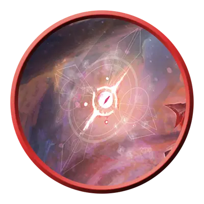

Йота эмпирея
Empyrean Iota
Среднее Исчадие или Небожитель (Титан), Нейтральное

Класс Защиты 13 Инициатива +2 (12)
Хиты 22 (5к8)
Скорость 5 футов, Полёта 30 футов (парит)
| мод | спас | ||
|---|---|---|---|
| СИЛ | 1 | −5 | −5 |
| ЛОВ | 14 | +2 | +2 |
| ТЕЛ | 10 | +0 | +0 |
| мод | спас | ||
|---|---|---|---|
| ИНТ | 15 | +2 | +2 |
| МДР | 16 | +3 | +3 |
| ХАР | 16 | +3 | +3 |
Сопротивление урону Дробящий, Колющий, Рубящий
Иммунитеты Опрокинутый
Чувства пассивное Восприятие 15, Истинное зрение 30 футов
Языки Все
Опасность 1 (200 опыта; БВ +2)
Особенности
Бестелесное перемещение. Йота может перемещаться через других существ и объекты, как если бы они были Труднопроходимой местностью. Она получает 5 (1к10) Силового урона, если завершает свой ход внутри объекта.
Сопротивление магии. Йота совершает с Преимуществом спасброски от заклинаний и прочих магических эффектов.
Действия
Потусторонний удар. Бросок рукопашной или дальнобойной атаки: +5, досягаемость 5 фт. или дистанция 30 фт. Попадание: 7 (1к8 + 3) Некротического урона или урона Излучением (по выбору йоты).
Сотворение заклинаний. Йота эмпирея сотворяет одно из следующих заклинаний, не нуждаясь в Материальных компонентах (заклинательная характеристика — Мудрость):
1/день каждое: Благословение, Малое восстановление
Бонусные действия
Лечащее слово (1/день). Йота сотворяет Лечащее слово (заклинательная характеристика — та же, что для Сотворения заклинаний).
Бонус мастерства +2
Среда обитания Любая
Сокровища Реликварные
Эмпиреи
Отпрыски богов
Эмпиреи — это порождения божеств. Не будучи богами сами по себе, они, однако, несут в себе влияние и силы, родственные их неземным родителям. Некоторые эмпиреи приближаются по статусу к полубогам с фантастическим могуществом и властью перекраивать судьбы смертных. Другие же — не более чем гордые помыслы, облечённые плотью, или мимолётные крупицы бессмертного внимания. Кем бы они ни были — идеализированными сущностями или отголосками святого, — их облик неизменно несёт на себе печать своего творца.
Совершите бросок по таблице «Божественный след» для вдохновения или выберите сами, какие аспекты божественности проступают в телесном обличье эмпирея.
Божественный след
| 1к6 | Эмпирей выглядит… |
| 1 | Уравновешенно, естественно — либо наводит на мысль о неустанно следящих очах. |
| 2 | Ярко, призрачно или текуче — либо меняется в зависимости от взирающего. |
| 3 | Утешительно и мягко — либо пробуждает в созерцателях приятные воспоминания. |
| 4 | Хаотично — разъединённые части тела, зримые помыслы или блуждающие очертания. |
| 5 | Подобно механизму, бесстрастно, симметрично — либо наводит на мысль о грядущем суде. |
| 6 | Мрачно, угрожающе или чудовищно — либо воплощают собой страхи глядящего. |
Йоты эмпиреев — это мысли, воспоминания и проблески божественного внимания, наделённые личностью и толикой самостоятельности. Напоминая парящие глифы, сгустки цвета, святые символы или иные, ещё более причудливые образы, эти создания служат посланцами богов и помощниками для их верных служителей. Йоты обладают собственными знаниями и характерами, хотя порой всё, что им ведомо, — владения и чаяния своих творцов.